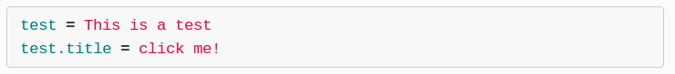
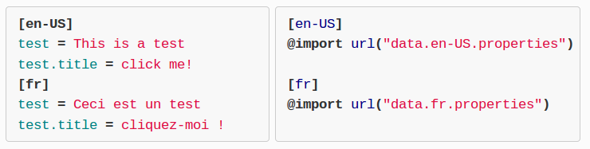

webL10n
javascript i18n / l10n library

Fabien Cazenave — [kazé] or @fabi1cazenave
javascript i18n / l10n library
Welcome {{user}}, you have {{n}} new message(s)
here are the three formats we use in Mozilla projects:
*.properties |
*.dtd |
*.po |
|---|---|---|
| (Java) | (XHTML) | (gettext) |
|
|
|
*.lol formatcourtesy of the “l20n” project
eval() *.properties … can be sent by the server (content negotiation):
… or can be selected by the client (multi-locale files):
<p data-l10n-id="welcome">Welcome to Firefox OS!</p>
[en-US]welcome = Welcome to Firefox OS![fr]welcome = Bienvenue sur Firefox OS !
<p data-l10n-id="welcome">Welcome to Firefox OS! </p>
brandShortName = Firefox OS[en-US]welcome = Welcome to {{brandShortName}}![fr]welcome = Bienvenue sur {{brandShortName}} !
<p data-l10n-args='{ "brandShortName": "B2G OS" }'data-l10n-id="welcome">Welcome to B2G OS!</p>
brandShortName = Firefox OS
[en-US]
welcome = Welcome to {{brandShortName}}!
[fr]
welcome = Bienvenue sur {{brandShortName}} !
Unicode CLDR: zero|one|two|few|many|other
<p data-l10n-id="messages"data-l10n-args='{ "count": "12" }'>You have 12 new messages. </p>
messages = {[ plural(count) ]}messages[zero] = No new messages.messages[one] = You have a new message.messages[other] = You have {{count}} new messages.
l10n_date.js module to handle date/time @fabi1cazenave / kaze